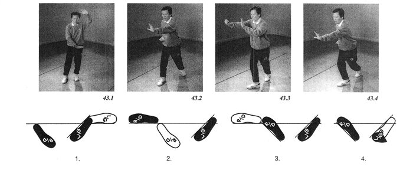

35 turn fist strike
turn body and strike
поворот кулак удар
повернуть тело и ударить

Part A: Shifting your weight to the right foot, lift your left toes as you raise the left hand above the forehead (palm up) and push the right hand down (palm down) in front of you. Pivot your left foot on the heel to the right until your feet are in a “pigeon-toed” position and put your left foot flat. Shift your weight back to your left foot and stand straight up. (Figure 43.1)
Part B: Step straight ahead with your right foot. Swing your right arm back and up, and your left arm back and down. As the right arm reaches the top of its arc, make a fist and then extend the arm fully in front of you, knuckles down. At the same time, tum the left hand palm up and bring it by your left hip. As you shift your weight forward, push the left hand palm forward and pull your right fist in to your right hip. (Figure 43.2)
Part C: Bring the right hand to the inside of the left elbow. Push the right hand palm forward and draw the left hand back (as if brushing off the left forearm) while shifting your weight to your left foot and turning the hips 45 degrees to the left. Bring the right arm down in a scooping motion, stand up on the left fdbt and push up to your left with both hands, palms facing you, the left hand above the right. Step “Pa Kua”, placing your right foot flat a halfstep in front of your left foot, pointing 45 degrees to the right. Make a fist with your right hand. (Similar to 14.1)
Part D: Throw your right fist forward in an arc, until your arm is straight and parallel to the floor, knuckles down. (Figure 43.3)
Part E: Pull your right fist in to your right hip (knuckles down) and push your left palm straight ahead while shifting your weight to your right foot. (Figure 43.4)